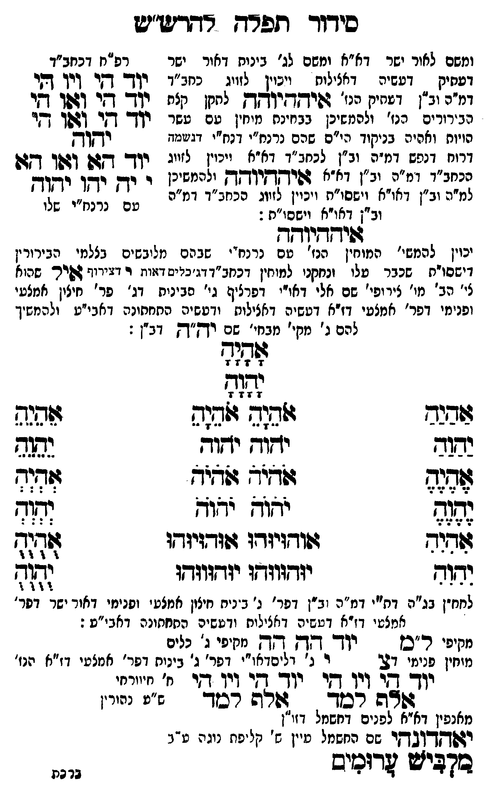

Neue Klartextfassung
[ומשם לאור ישר דא"א ומשם לג' בינות דאור ישר דעתיק דעשיה דכללות ויכוין לזווג כחב"ד דמ"ה וב"ן דעתיק איההיוהה לתקן כלם הבירורים הנז' ולהמשיכן כבחינת מוחין עם עשר הויות וחלפי' בניקוד כ"ס שהם נרנח"י ורנח"י דיחידה דרוח דנפש דמ"ה וב"ן לכחב"ד דא"א ויכוין לזווג בכחב"ד דמ"ה וב"ן דא"א איההיוהה ולהמשיכן למ"ה וב"ן דאו"א וישסו"ת ויכוין לזווג הכחב"ד דמ"ה וב"ן דאו"א וישסו"ת:] === טבלה === [טור שמאל — רפ"ח דכחב"ד] יוד הי ויו הי יוד הי ואו הי יוד הי ואו הי יהוה יוד הא ואו הא [למ"ד לאבא] י יה יהו יהוה [למ"ן לאימא עם נרנח"י שלו] === סוף טבלה === איההיוהה [יכוין להמשי' המוחין הנז' עם נרנח"י שבהם מלובשים בצלמי הבירורי' דישסו"ת שכבר עלו ונתקנו למוחי' דכחב"ד דג' כלים האות אל דג' כלי הארה לג' מו' דיצו' עם טל' דנה"י דאו"י דפרצוף ג' הבינות דג' פר' חיצון אמצעי ופני' דפרצוף אמצעי דז"א דעשיה דכללות ורביעיה התחתונה דאבי"ע ולהמשיך להם ב' מקי' ממקי' שם יה"ה דב"ן:] === טבלה === [טור ימין] אַהַיַהַ יַהַוַהַ אֶהֶיֶהֶ יֶהֶוֶהֶ אִהִיִהִ יִהִוִהִ [טור אמצעי] אָהָיָהָ יָהָוָהָ אֹהֵיָהֵ אֹהֵיָהֵ יֹהֵוָהֵ יֹהֵוָהֵ אֹהֹיֹהֹ אֹהֹיֹהֹ יֹהֹוֹהֹ יֹהֹוֹהֹ אוּהוּיוּהוּ אוּהוּיוּהוּ יוּהוּווּהוּ יוּהוּווּהוּ [טור שמאל] אֵהֵיֵהֵ יֵהֵוֵהֵ אְהְיְהְ יְהְוְהְ אֻהֻיֻהֻ יֻהֻוֻהֻ === סוף טבלה === [לחח"ן בג"ה דת"י דמ"ה וב"ן דפר' ג' בינות חיצון אמצעי ופנימי דאור ישר דפר' אמצעי דז"א דעשיה דכללות ורביעיה התחתונה דאבי"ע:] [מקיפי ל"ם] יוד הה הה [מקיפי ג' כלים] [מוחין פנימי דצ'] צ ו ג' [ג' כלים דאו"י דפר' ג' בינות דפר' אמצעי דז"א הנז'] === טבלה === [טור ימין] יוד הי ויו הי אלף למד [טור אמצעי] [ב' חיוורתי] [ט"ס נהורין [?]] [טור שמאל] יוד הי ויו הי אלף למד === סוף טבלה === [מלביש או"א לפנים בחשמל זו"ן] יאהדונהי [שם החשמל עיין ש' קליפת נוגה פ"ג] מלביש ערומים
Original gegen neue OCR · Niqqud für Vergleich ausgeblendet
Original
[ומשםK047-001 לאור ישר דא"א ומשם לג' בינותK047-002 דאור ישר ∅K047-003 דעתיק ∅K047-004 דעשיה דכללות ויכוין לזווגK047-005 כחב"ד ∅K047-006 דמ"ה וב"ן דעתיק איההיוהה לתקן כלםK047-007 הבירורים הנז' ולהמשיכן כבחינת מוחיןK047-008 עם עשר הויות וחלפי'K047-009 בניקוד כ"סK047-010 שהם נרנח"י ורנח"י דיחידהK047-011 דרוח דנפשK047-012 דמ"ה וב"ן לכחב"ד דא"א ויכוין לזווג בכחב"דK047-013 דמ"ה וב"ן דא"א איההיוההK047-014 ולהמשיכן ∅K047-015 למ"ה וב"ן דאו"א וישסו"ת ויכוין לזווג הכחב"דK047-016 דמ"ה ∅K047-017 וב"ן דאו"א וישסו"ת:] === טבלה === [טור שמאל — רפ"ח דכחב"ד] יוד הי ויו הי יוד הי ואו הי יוד הי ואו הי יהוה יוד הא ואו הא [למ"ד לאבא] י יה יהו יהוה [למ"ן לאימא עם נרנח"י שלו] === סוף טבלה === איההיוהה [יכויןK047-018 להמשי' המוחין הנז' עםK047-019 נרנח"י שבהם מלובשיםK047-020 בצלמי הבירורי'K047-021 דישסו"ת שכבר עלו ונתקנו למוחי'K047-022 דכחב"ד דג' כלים האות אל דג' כלי הארה לג'K047-023 מו' דיצו' עם טל' דנה"יK047-024 דאו"י דפרצוף ג' הבינותK047-025 דג' פר' חיצוןK047-026 אמצעי ופני' דפרצוף אמצעיK047-027 דז"א דעשיה דכללות ורביעיהK047-028 התחתונה דאבי"ע ולהמשיך להם ב'K047-029 מקי' ממקי'K047-030 שם יה"ה דב"ן:] === טבלה === [טור ימין] אהיה יהוה אהיה יהוה אהיה יהוה [טור אמצעי] אהיה יהוה אהיה אהיה יהוה יהוה אהיה אהיה יהוה יהוה אוהויוהו אוהויוהו יוהוווהו יוהוווהו [טור שמאל] אהיה יהוה אהיה יהוה אהיה יהוה === סוף טבלה === [לחח"ןK047-031 בג"ה דת"י דמ"ה וב"ןK047-032 דפר' ג' בינותK047-033 חיצון אמצעיK047-034 ופנימי דאור ישר דפר' אמצעי דז"א דעשיה דכללות ורביעיה התחתונה דאבי"ע:] [מקיפי ל"ם] יוד הה הה [מקיפי ג' כלים] [מוחיןK047-035 פנימי דצ'] צ ו ג' [ג' כלים דאו"יK047-036 דפר' ג' בינותK047-037 דפר' אמצעיK047-038 דז"א הנז'] === טבלה === [טור ימין]K047-039 יוד הי ויו הי אלף למד [טור אמצעי] [ב' חיוורתי] [ט"ס נהורין ] [טור שמאל] יוד הי ויו הי אלף למד === סוף טבלה === [מלביש או"אK047-040 לפנים בחשמל זו"ן] יאהדונהי [שםK047-041 החשמל עיין ש' קליפתK047-042 נוגה פ"ג] מלביש ערומיםK047-043
OCR · fehlbar
סידוד תפרח רתדיש"יש ומשםK047-001 לאור ישר דא"א ומשם לג' בינוחK047-002 דאור ישר רפ"ח דכחב"דK047-003 דעתיק -K047-004 דעשיה דאצילות. ייכוין לזווג.K047-005 כחב"ד יןד- דקי (יך חיK047-006 דמ"ה וב"ן דבחיק הנו' גויחדזי"חק לחקן קצח יודך שי וז0ך ד[יK047-007 הבירורים הנז' ולהמשיכן בבזינח מיחיןK047-008 עם עשר יוק- דזי (4שך די הויוח ואהיהK047-009 בניקוד הי"ם.K047-010 שהם נרנח"י דנח"י דגשמד יקןץK047-011 דרוח דנאשK047-012 דמ"ה וב"ץ לכתב[ג נצא ייניין ליי. יו- -גש (גן' גש הכחב"דK047-013 דמ"ה וב"ן דא"א זפידקיקךקK047-014 ולהמשיכן ף יךן רדץן יד[ךקK047-015 למ"ה וב"ן דאו"א וישסו"ת ויכוין לזיוג הכחג"דK047-016 דמ"ה עב ' נלנז"י ישלK047-017 וב"ן דאו"א ישסו"ת : איז שידדיודד יכויןK047-018 להמשי' המוחין הנז' טםK047-019 נרנח"י שבהם מליבשיםK047-020 בצלמי הבירוריןK047-021 דישסו"ת שכבר עלו זנחקני למוחיןK047-022 דכחב"ד דג"כייים ז:יוח ר וירו' בשיר שהוא צי' הב'K047-023 מו' צירופי' שם אלי 'K047-024 דאו"י דפרציף גי' סביניחK047-025 דג' פר' חיציןK047-026 אמצעי ופנימי דפר' אמצטיK047-027 דז"א דטשיה דאצילותץ ודטשיהK047-028 התחתונה דאבי"ע ולהמשיך להם ג'K047-029 מקי' מבחי'K047-030 שם יךז"ךק דב"ן : לאלל 7 0 7 7 הז 4 4 7 ז. שבבב ג[פזד זלח(9 ש9נג נדד יזוז ידוד נצה שגד זודז"ב 7ודיד. לל[ נגזצ יחיש ידוך לל שדיר שודזיזדו גוודזיוךו ג(ד(7 2322 יגדגווש[ו יזד(גוודו (גז-ד לחח"ןK047-031 בג"ה דת"י דמ"ה (ב"ןK047-032 דפר' ג' ביניחK047-033 חיצון אמצט'K047-034 ופנימי דאור ישר דסר' אמצטי דזיא דטשיה דאצילוח ודטשים החחסונה דאבי"ט : חרפי ר"כ. - יוך - דך 70 (זחג.:' נני מוחיןK047-035 פנימי 27 ר נ' וליסדאו"יK047-036 דפר' ג' בינוחK047-037 דפר' אמצטיK047-038 דז"א הנז' יוך בץ וין היK047-039 יוד ד זיו די "ח' י"יייזי ללאה רבר . צוחה רך ש"ף ננירן מאנפין דאיאK047-040 לפנים דחשמל דזו"ן ידשדקדובץר שםK047-041 החשמל עיין ג' קליפותK047-042 נוגה ע"ב עו ו ביק0יש דוכמיש ני נזK047-043